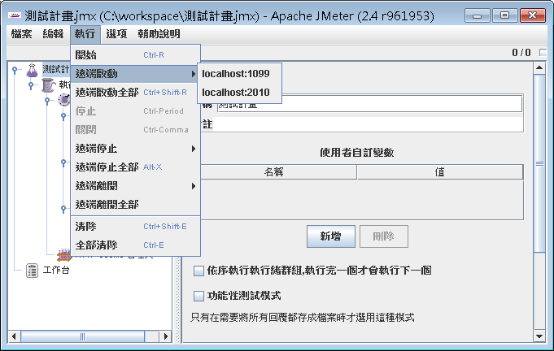

如果你需要模擬非常大量的使用者，也就是說，你需要非常大量的執行緒來執行測試，受限於單一電腦可用的資源有限，你可以結合數台電腦來進行測試，或選擇一台資源豐富的電腦來進行測試。
JMeter可以進行分布式測試，由一台電腦當作Controller，由其它電腦當作Agent，你可以從Controller中執行JMeter，指定某台Agent發出執行緒進行測試，也可以指揮所有的Agent同時發出執行緒進行測試。
要作為Agent的電腦，必須執行JMeter的bin目錄下，jmeter-server.bat（Windows）或jmeter-server （Liunx下，Bash），這會啟動Agent的RMI服務，預設使用1099作為連接埠，你可以在Agent的電腦中JMeter的bin目錄中，找 到jmeter.properties檔案中的server_port進行設置。
而要作為Controller的電腦，可以打開jmeter.properties檔案，找到remote_hosts選項，預設是設定為127.0.0.1，你可以設置為Agent的電腦並指定連接埠，例如：
remote_hosts:192.168.0.3:1099,192.168.0.9:2010
設定好之後加以儲存，執行JMeter，在「執行」下，你就可以看到如下的圖示：

你可以在設定好測試計畫之後，選擇要啟動哪一台Agent發出測試，或者也可以遠端啟動全部的Agent發出測試。